2017년 2월 9일
타일러 코웬(Tyler Cowen)은 비용 질병(cost disease)에 대해 썼다. 이전에 내가 알기로 이 용어는 일부 분야의 노동 효율성이 다른 분야보다 더 빠르게 향상되면서 비용이 상승한다는 특정 이론만을 지칭하는 것이었다. 하지만 코웬은 이를 일반적인 비용 상승 전체를 가리키는 말로 무분별하게 사용하는 듯하다. 뭐, 상관없을 것이다. 그런 현상을 지칭할 단어가 절실히 필요하다는 건 누구나 알 테니까.
코웬(Cowen)은 독자들이 비용 질병(cost disease)의 존재를 이미 이해하고 있다고 가정한다. 이것이 사실인지는 모르겠다. 내 인상으로는 대부분의 사람들이 여전히 비용 질병에 대해 모르거나, 혹은 그것이 어느 정도 규모인지 깨닫지 못하고 있는 것 같다. 그래서 나는 타일러(Tyler)가 언급한 분야인 의료와 교육, 그리고 몇 가지 분야를 더해 비용 질병의 근거를 제시해 보려 한다.
먼저 초등 교육을 살펴보자.
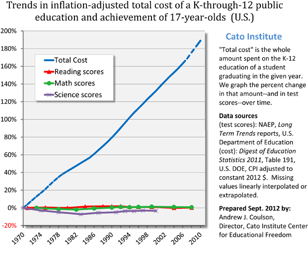
이 그래프의 스타일에 대해 약간의 논쟁이 있었으나, 폴리티팩트(Politifact)에 따르면 기본적인 주장은 사실이다. 인플레이션을 조정하고 나서도 지난 40년 동안 학생 1인당 지출은 약 2.5배 증가했다.
동시에 시험 점수는 상대적으로 정체된 상태다. 여기서 전체 수치를 확인할 수 있는데, 요약하자면 고등학생의 독해 점수는 1971년 285점에서 오늘날 287점으로, 단 0.7% 상승하는 데 그쳤다.
인종 간에 어느 정도의 이질성은 존재한다. 백인 학생들의 시험 점수는 1.4% 상승한 반면, 소수 인종 학생들의 점수는 약 20% 상승했다. 하지만 소수 인종 학생들의 성적 향상을 학교 지출의 공으로 돌리기는 어렵다. 이러한 향상은 거의 전적으로 1975년에서 1985년 사이에 일어났기 때문이다. 학교 지출은 그 시기 전후로, 그리고 백인 거주 지역과 소수 인종 거주 지역 모두에서 정확히 동일한 궤적을 그려왔다. 이는 백인이 아닌 소수 인종의 점수만을 높인 그 10년만의 특수한 무언가가 있었음을 시사한다. 아마도 당시 소수 인종의 전반적인 생활 여건이 개선되면서 영양 상태가 좋아지고 가정생활이 더 안정되었을 가능성이 크다. 학교 지출이 이를 가능케 했다는 서사를 구성하기는 어렵다. 설령 그랬다 하더라도, 학교 지출 증가의 대부분은 1985년 이후에 일어났으며, 이는 백인과 소수 인종 모두에게 아무런 도움이 되지 않았음이 명백하다.
이 현상에 대해서는 여기와 여기에서 더 자세히 논의했지만, 요약하자면 다음과 같다. 아니다, 단순히 특수 교육(special ed) 때문만은 아니다. 아니다, 시험 점수를 측정하는 방식의 문제만도 아니다. 아니다, '천장 효과(ceiling effect)'가 있는 것도 아니다. 측정 가능한 품질의 동반 상승 없이 비용이 실제로 거의 두 배로 뛰었다.
자, 당신이 가난한 사람이라고 가정해 보자. 백인이든 소수 민족이든 상관없다. 당신이라면 무엇을 선호하겠는가? 자녀를 2016년의 학교에 보내는 것인가? 아니면 자녀를 1975년의 학교에 보내는 대신, 매년 5,000달러의 수표를 받는 것인가?
내가 이 선택지를 제안하는 이유는, 내가 보기에 이것이 바로 이 문제의 핵심(stakes)이기 때문이다. 2016년의 학교들은 1975년의 학교들에 비해 테스트 점수 면에서 아주 미미한 우위를 점하고 있을지는 모르나, 물가 상승분을 반영했을 때 연간 5,000달러의 비용이 더 든다. 그 5,000달러는 결국 누군가의 주머니에서 나온다. 그것이 납세자든, 혹은 정부 프로그램의 도움을 받을 수 있었던 다른 사람들이든 말이다.
둘째, 대학의 경우는 훨씬 더 심각하다.
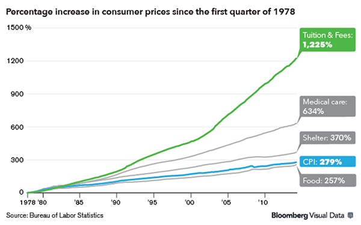
인플레이션을 조정한 대학 교육 비용은 1980년 당시 연간 약 2,000달러 정도였다. 현재는 연간 20,000달러에 가깝다. 아니, 이것은 정부 지원금의 감소 때문이 아니며, 국립대와 사립대 모두 비슷한 궤적을 보인다.
대학의 성과를 측정하는 '시험 점수' 같은 지표가 있는지 모르겠으니, 그냥 본인의 판단에 맡기겠다. 현대의 대학이 부모님 세대의 대학보다 연간 18,000달러만큼 더 큰 가치를 제공한다고 생각하는가? 당신은 현대의 대학을 졸업하겠는가, 아니면 부모님이 다녔던 것과 더 유사한 대학을 졸업하고 추가로 72,000달러가 든 수표를 받겠는가?
(또는 더 현실적으로 말하자면, 갚아야 할 학자금 대출이 72,000달러 더 적은 상태가 되는 것이다)
부모님이 다니신 대학이 당신이 다닌 대학보다 눈에 띄게 더 별로였던가? 우리 부모님은 가끔 대학 시절 이야기를 하시는데, 들어보면 대학 생활이라면 갖춰야 할 모든 요소가 다 있었던 것 같다. 동아리, 수업, 교수님, 그리고 룸메이트까지. 내가 72,000달러를 냈으니 무언가 추가적인 혜택을 받았을지도 모르겠지만, 그게 정확히 무엇이었는지는 알기 어렵다.
셋째, 의료 서비스다. 그래프가 실망스러울 정도로 익숙한 모습으로 나타나기 시작한다.
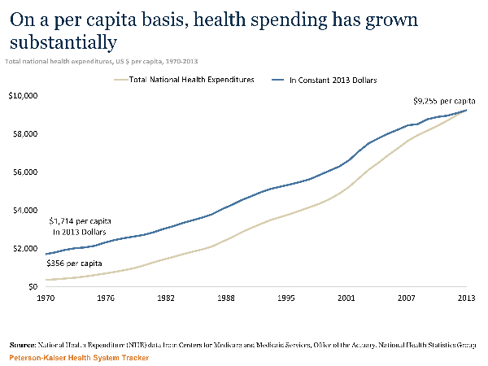
의료비는 1970년 이후 약 5배 증가했다. 사실 그보다 더 이전부터 상승해 왔으나 적절한 그래프를 찾을 수 없었다. 1960년 기준 현재 가치로 환산하면 약 1,200달러였을 것으로 보이며, 이 경우 50년 동안 약 800% 증가한 셈이 된다.
결과는 예상대로였다. 1960년대의 평균 노동자는 연봉의 열흘 치에 해당하는 금액을 건강보험료로 지출했으나, 현대의 평균 노동자는 연봉의 60일 치, 즉 전체 수입의 6분의 1을 지출한다.
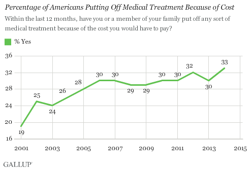
이번에는 이 모든 추가 지출이 완전히 헛수고였다고 100% 확신하며 말할 수는 없다. 1960년 이후 기대 수명은 비약적으로 상승했다.
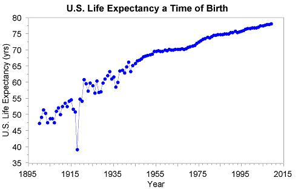
하지만 많은 이들은 기대 수명이 의료비 지출보다 다른 요인들에 훨씬 더 많이 의존한다고 생각한다. 위생, 영양, 금연, 그리고 더 많은 비용을 들일 필요가 없는 보건 기술의 발전 같은 것들 말이다. 1975년에 발명된 ACE 억제제(ACE inhibitors)는 매우 훌륭하며 아마도 수명 연장에 크게 기여했겠지만, 1년 치 비용이 20달러에 불과하며 비용이 비슷했던 기존 약물들을 대체했을 뿐이다.
의료비 지출이 수명 연장에 얼마나 기여했는지를 계산하는 방법에는 몇 가지 선택지가 있다. 우선 국가별로 살펴보자.
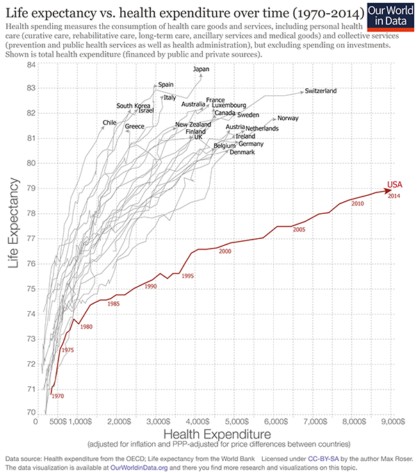
한국이나 이스라엘 같은 국가들은 미국과 기대 수명이 비슷하면서도 의료비 지출은 미국의 약 25% 수준에 불과하다. 어떤 이들은 이를 근거로 중앙 집중식 정부 의료 체계의 우월성을 증명하려 하지만, 랜덤 크리티컬 어낼리시스(Random Critical Analysis)는 이에 대해 다른 관점을 제시한다. 어찌 되었든, 의료비 지출을 8배나 늘리지 않고도 미국과 동일한 수준의 기대 수명 향상을 달성하는 것은 충분히 가능한 일로 보인다.
네덜란드는 2000년경 보건 예산을 대폭 증액했으며, 이는 해당 조치가 기대 수명을 실제로 높였는지에 대한 수많은 연구로 이어졌다. 여기에 적절한 메타 분석 결과가 있는데, 이 분석은 이 시기의 막대한 보건 지출 증가가 기대 수명 변화에 얼마나 기여했는지를 계산하려 한 6가지 연구를 나열하고 있다. 추정치 범위는 매우 넓다: 0.3%, 1.8%, 8.0%, 17.2%, 22.1%, 27.5% (남성 수치를 기준으로 했으며, 여성 수치도 상당히 비슷하다). 또한 공식적으로는 포함하지 않은 두 가지 연구도 언급하는데, 하나는 효과가 0%였고 다른 하나는 50%였다(왜 이 연구들이 제외되었는지는 모르겠다). 그들은 다음과 같이 덧붙인다.
이 연구들 중 그 어느 것도 역인과관계(reverse causality) 문제를 다루지 않았으며, 때로는 언급조차 되지 않았다. 이는 의료비 지출이 사망률에 미치는 영향이 과대평가되었을 가능성이 있음을 시사한다.
그들은 이렇게 말한다:
실증 연구들을 검토한 결과, 우리는 의료 지출의 증가가 최근 네덜란드의 기대 수명 증가에 기여했을 가능성이 높다는 결론을 내렸다. 2000년에서 2010년 사이 네덜란드에서 관찰된 의료 지출 증가분[40%]에 기발표된 연구들의 추정치를 적용해 보면, 기대 수명 증가분의 0.3%에서 최대 50% 가까이 의료 지출 증가로 인해 발생했을 수 있음을 시사한다. 이러한 추정치의 범위가 이토록 넓은 중요한 이유는, 해당 연구들이 모두 본 논문에서 강조한 방법론적 문제점들을 포함하고 있기 때문이다. 하지만 이 넓은 범위는, 1950년대 이후 네덜란드 기대 수명 증가분의 50%가 의료 서비스 덕분이라고 주장한 미어딩(Meerding) 등의 반사실적 연구가 아마도 상한선으로 해석될 수 있음을 나타낸다.
지난 50년간 미국의 의료비 지출 증가에 이 논리를 적용하려는 시도는 완전히 무책임한 일이 될 것이다. 왜냐하면 매 단계마다 상황이 다를 가능성이 높고, 미국은 네덜란드가 아니며, 1950년대는 2010년대가 아니기 때문이다. 하지만 우리가 무책임하게 그들의 중앙 추정치를 가져와 현재의 문제에 적용해 본다면, 미국의 의료비 지출 증가는 기대 수명 약 1년의 추가 연장 가치가 있었다는 결과가 나온다. 이 연구는 GDP의 일정 비율이 기대 수명 0.05년의 증가에 해당한다는 점을 직접 추산하려 시도한다. 이 경우 1960년 이후 의료비 지출로 얻은 기대 수명은 0.65년이라는 약간 다른 수치가 도출된다.
이 수치들이 터무니없이 낮게 느껴진다면, 사람들에게 보험을 제공한다고 해서 유의미한 방식으로 건강이 크게 개선되지는 않는 것으로 나타난 그 모든 통제 실험들을 기억하라.
아니면 통계 자료를 힘들게 파헤치는 대신, 이전과 똑같은 질문을 던져볼 수도 있다. 평범한 빈곤층이나 중산층이라면 다음 중 무엇을 더 선호하겠는가?
넷째, 인프라에서도 비슷한 현상이 나타난다. 뉴욕시(New York City)의 첫 지하철은 1900년경에 개통되었다. 여러 자료에 따라 노선 길이는 10~20마일, 비용은 3,000만 달러에서 6,000만 달러 사이로 기록되어 있는데, 아마 자료마다 건설 단계나 연장 구간의 수가 달랐기 때문인 것으로 보인다. 어쨌든 이를 계산하면 마일당 150만 달러에서 600만 달러, 즉 킬로미터당 100만~400만 달러의 비용이 든 셈이다. 이 수치를 현재 가치로 환산하면 킬로미터당 약 1억 달러 정도가 되겠지만, 이 추정치는 매우 불확실하다. 반면, 복스(Vox)의 보도에 따르면 올해 개통되는 뉴욕의 새로운 지하철 노선은 킬로미터당 약 22억 달러가 소요되었다고 한다. 이 추정치 역시 불확실하긴 하지만, 비용이 20배나 증가했음을 시사한다.
국가별로 비교해 보면 상황이 더 명확해진다. 앞서 언급한 복스(Vox)의 기사에 따르면 파리, 베를린, 코펜하겐의 지하철 건설 비용은 킬로미터당 약 2억 5천만 달러로, 거의 90%나 더 저렴하다. 하지만 이 유럽의 지하철들조차 한국과 비교하면 과하게 비싼 편이다. 서울의 지하철 건설 비용은 킬로미터당 4천만 달러이며, 또 다른 한국의 지하철 프로젝트는 킬로미터당 8천만 달러가 들었다. 겉보기에 비슷한 서비스임에도 서울과 뉴욕 사이에 50배라는 엄청난 차이가 나는 것이다. 이는 만약 당시 뉴욕의 효율성이 현대 유럽이나 한국 수준이었다면, 위에서 언급한 1900년대 뉴욕의 추정치가 대략적으로 정확했을 수도 있음을 시사한다.
다섯째, 주거(source):
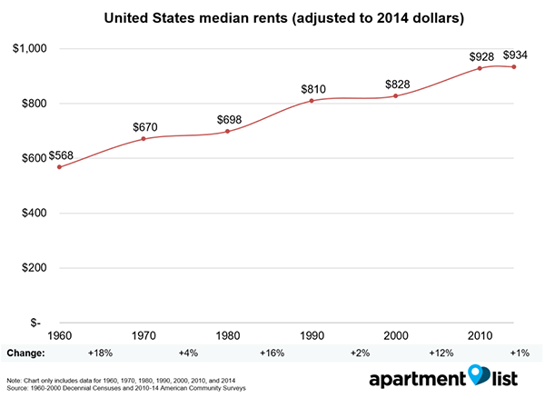
이 그래프에 대한 중요한 분석들은 이미 다 다뤄졌지만, 미국기업연구소(American Enterprise Institute)의 이런 관점과 같은 낙관적인 해석들은 몇 가지 역동적인 측면을 놓치고 있다는 점을 덧붙이고 싶다. 그렇다, 집들이 예전보다 커진 것은 맞다. 하지만 그 이유 중 일부는 작은 집보다 큰 집을 짓는 것이 더 유리하게 만드는 용도지역제(zoning laws)에 있다. 더 작은 집을 선호하지만 그렇게 하지 못하는 사람들이 많다. 내가 처음 미시간(Michigan)으로 이사했을 때, 직장 근처에 괜찮은 방 하나짜리 집이 없었고 아파트들은 모두 시끄럽고 치안이 좋지 않았기에, 나는 방 세 개짜리 집에서 혼자 살아야 했다.
아니면, 다시 한번 스스로에게 물어보라. 대부분의 빈곤층과 중산층 사람들이 다음 중 무엇을 더 선호할 것 같은가.
요약하자면 다음과 같다. 지난 50년 동안 교육비는 두 배, 대학 등록금은 열 배, 건강보험료는 열 배, 지하철 운임은 최소 열 배가 올랐으며, 주거비는 약 50% 상승했다. 미국의 의료비는 다른 선진국들의 동일 수준 의료 서비스보다 약 4배 더 비싸며, 미국 지하철 운임은 다른 선진국들의 동일 수준 지하철보다 약 8배 더 비싸다.
사람들이 이것이 얼마나 기이한 일인지 제대로 인식하지 못하고 있는 것 같아 걱정이다. 나 역시 오랫동안 깨닫지 못했다. 그저 할아버지가 옛날에는 영화표 한 장에 5센트밖에 안 했다고 말씀하시던 것을 떠올리며, 세상 이치가 원래 그런 것이라 생각했을 뿐이다. 하지만 위의 모든 수치는 인플레이션을 조정한 값이다. 할아버지 시대에 영화표가 5센트였다는 점을 감안하고 조정한 후에도 이 비용들은 10배나 뛰었다. 경제학적인 눈속임 따위는 없다. 정말로, 진심으로 비용이 10배가 된 것이다.
그리고 이는 특히나 이상한 일이다. 우리는 기술의 발전과 세계화가 비용을 절감할 것이라고 기대하기 때문이다. 1983년, 최초의 휴대전화 가격은 4,000달러였으며, 이는 오늘날의 가치로 약 10,000달러에 달한다. 게다가 그 기기는 거대한 쓰레기나 다름없었다. 하지만 오늘날에는 훨씬 더 좋은 성능의 전화를 단돈 100달러에 구할 수 있다. 이것이야말로 우주가 돌아가는 올바르고 당연한 방식이다. 우리가 과학자들에게 연구비를 지원하고, 사업가들에게 거액의 연봉을 지불하는 이유이기도 하다.
하지만 대학 교육이나 의료 서비스 같은 것들의 가격은 여전히 10배나 뛰었다. 이제 환자들은 온라인으로 진료 예약을 잡을 수 있고, 의사는 팩스로 처방전을 보낼 수 있으며, 약국은 클라우드와 연동된 중앙 집중식 컴퓨터 시스템으로 투약 이력을 관리한다. 간호사는 상호작용 가능성이 있는 두 가지 약물을 투여할 때 자동 알림을 받고, 보험사는 신용카드 결제를 받는다. 그런데 이 모든 비용이 천공 카드와 수작업으로 계산하던 비서가 있던 시절보다 10배는 더 든다.
실상은 이보다 훨씬 더 심각하다. 우리는 과거 세대에는 불가능했던 수많은 비용 절감 기회들을 활용하고 있기 때문이다. 저임금의 외국인 간호사들이 미국으로 이주해 헐값에 일한다. 의사의 진료 기록은 하룻밤 사이에 인도로 전송되어, 그곳의 스웨트숍(sweatshop, 저임금 노동 착취 공장)식 노동자들에 의해 시간당 몇 센트의 비용으로 전사된다. 의료 장비는 어디인지도 모를 제3세계의 어느 이름 없는 국가에서 제조된다. 그런데도 이 모든 것이 미국 내에서 생산되던 시절보다 비용이 10배나 더 든다. 당시에는 최저임금의 상대적 수준이 지금보다 더 높았음에도 말이다.
사실 상황은 이보다 더 심각하다. 상당수의 서비스가 품질 면에서 하락했는데, 이는 아마도 비용을 더욱 절감하려는 시도 때문일 것이다. 과거의 의사들은 왕진을 다녔다. 내가 어렸던 80년대에도 아버지는 진료실로 오기에는 너무 편찮으신, 상태가 까다로운 환자들의 집을 여전히 방문하시곤 했다. 이 연구에 따르면, 병원에서 출산하는 여성의 경우 "표준 입원 기간이 1950년대에는 8~14일이었으나 1990년대 중반에는 2일 미만으로 감소했다"고 한다. 내가 대화를 나눠본 의사들은 이것이 현대 여성들이 더 건강해졌기 때문이 아니라, 다음 환자를 위해 병상을 비우려고 안전하다고 판단되는 즉시 퇴원시키기 때문이라고 말한다. 과거의 병원 진료 기록들을 보면 대체로 여유로운 회복 기간을 가졌으며, 환자가 완전히 회복되었다고 느낄 때까지 확인한 뒤에야 퇴원시켰다고 묘사되어 있다. 이는 '안정적'인 상태, 즉 급성 위기 상황이 아니면 즉시 퇴원시키는 것이 모토인 현대 병원을 경험해 본 사람에게는 매우 기이하게 느껴질 일이다.
만약 우리가 1960년대와 동일한 수준의 서비스 품질을 제공해야 하고, 현대 기술의 발전과 세계화로 인한 이득조차 누릴 수 없다고 가정한다면, 의료비가 대체 얼마나 더 치솟았을지 누가 알겠는가? 50배? 아니면 100배쯤 되었을까?
대학이나 주택, 지하철 등 다른 사례들도 마찬가지다.
비용 질병(cost disease)에 관한 기존 문헌들은 보몰 효과(Baumol effect)에 주목한다. 어떤 저개발 경제 체제에서 사람들이 공장에서 일할지 아니면 오케스트라에 합류할지를 선택할 수 있고, 공장 노동자와 오케스트라 단원의 급여가 해당 산업의 상대적 수요·공급 및 이윤을 반영한다고 가정해 보자. 그러다 이 경제 체제에 기술 혁명이 일어나 공장에서 이전보다 10배 더 많은 제품을 생산할 수 있게 된다. 이렇게 증가한 생산성의 일부가 공장 노동자들에게 흘러 들어가 그들의 수입이 늘어난다. 그러면 음악가를 꿈꾸던 이들이 더 높은 임금을 주는 공장으로 가기 위해 오케스트라를 떠나게 되고, 오케스트라는 충분한 단원을 확보하기 위해 가격을 올릴 수밖에 없다. 결국 공장 부문의 기술 발전이 오케스트라 부문의 가격 상승을 불러오는 것이다.
교육이나 의료 등의 분야에서 비용이 상승하는 이유를 다음과 같은 이야기로 설명할 수 있을 것이다. 만약 기술 발전이 다른 산업에 종사하는 숙련 노동자들의 생산성을 높인다면, 기술의 영향을 덜 받는 산업들은 노동자들에게 더 많은 임금을 지급해야 하므로 결국 그 비용을 떠안게 될 수 있다.
딱 한 가지 문제가 있다. 의료와 교육 분야가 노동자들에게 더 많은 임금을 지급하고 있지 않다는 점이다. 사실, 그 반대다.
시간 경과에 따른 교사 급여 현황은 다음과 같다 (출처):
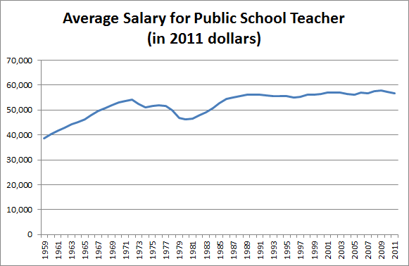
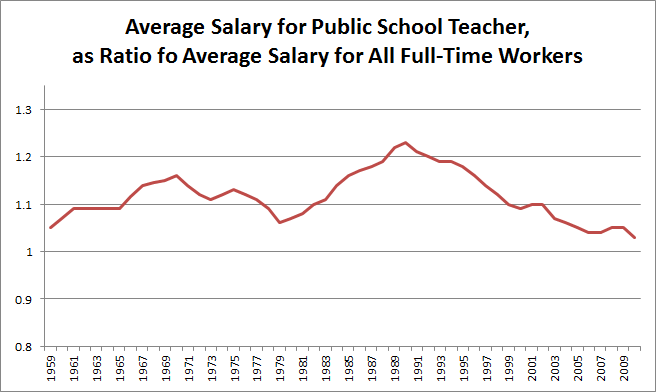
교사 급여는 인플레이션을 감안하면 상대적으로 정체되어 있다. 반면 다른 직종의 급여는 인플레이션 대비 완만하게 상승하고 있다. 따라서 다른 직종의 급여와 비교했을 때 교사의 급여는 사실상 하락하고 있는 셈이다.
교수들에 대한 유사한 그래프는 다음과 같다 (출처):
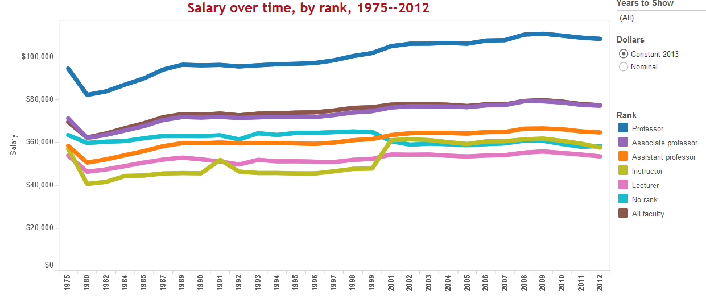
교수들의 급여가 약간 상승하고는 있지만, 이 역시 평균적인 직종과 비교하면 상대적 지위는 아마 낮아지고 있을 것이다. 또한, 각 직급별 교수의 평균 급여는 안정적이거나 상승하고 있음에도 불구하고, 전체 교수의 평균 급여는 하락하고 있다는 점에 주목하라. 여기에는 아무런 미스터리가 없다. 대학들은 정년 보장 교수에서 시간 강사로 전환하기 위해 가능한 모든 수단을 동원하고 있으며, 이 강사들은 스타벅스 바리스타와 비슷한 수준의 돈을 벌면서 과로와 학대에 시달리고 있다고 호소한다.
이는 산모를 위한 의료 서비스를 축소하는 병원들의 사례와 매우 비슷해 보인다. 서비스 가격은 10배나 뛰었지만, 동시에 비용을 통제하기 위해 서비스의 질은 희생되어야만 하는 상황인 것이다.
병원 이야기가 나온 김에, 간호사에 관한 그래프를 살펴보자 (출처):
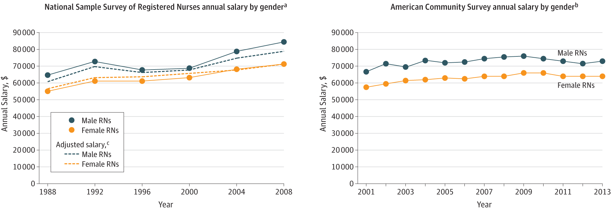
여성 간호사의 급여는 1988년 약 55,000달러에서 2013년 63,000달러로 상승했다. 이는 아마도 해당 기간의 평균 임금 상승률과 비슷할 것이다. 또한, 이러한 수치에는 교육 수준의 변화가 일부 반영되어 있다. 1980년대에는 간호사의 40%만이 학위를 가지고 있었으나, 2010년 무렵에는 그 비율이 약 80%에 달했다.
그리고 의사들의 경우(source)
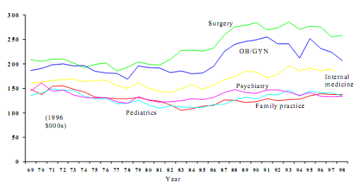
다시 안정되었다! 다만 이제는 많은 의사들의 급여가 의대 학자금 대출을 갚는 데 쓰이고 있다는 점이 문제다. 이 대출금은 다른 모든 것들과 마찬가지로 걷잡을 수 없이 불어나고 있다.
지하철 노동자에 대한 유사한 그래프는 가지고 있지 않지만, 설마 정말로 필요하겠는가. 전체적인 그림을 보면, 의료 및 교육 비용은 10배나 증가했지만 그 이득이 교사, 의사, 간호사에게 단 한 푼도 돌아가지 않았다는 사실이다. 실제로 이들 직종은 다른 직종에 비해 급여 수준이 오히려 낮아진 것으로 보인다.
이러한 딱딱한 사실들에 개인적인 일화를 좀 덧붙이고 싶다. 아버지는 의사시고 어머니는 선생님이시라, 지난 세대 동안 이 직업들이 어떻게 변해왔는지에 대해 많은 이야기를 들을 수 있었다. 비록 논의하기 매우 쉬운 '교수 대 시간강사'라는 명확한 이분법적 구도는 없지만, 상황은 시간강사들의 이야기와 어느 정도 비슷해 보인다. 의사들은 정말, 정말, 정말로 불행하다. 내가 의과대학에 다닐 때, 어떤 교수님들은 의사들에게 지워지는 새로운 스트레스와 요구 사항들이 이렇게나 많은데 어떻게 아직도 의학의 길을 택하는 사람이 있는지 믿기지 않는다고 대놓고 말씀하시곤 했다. 이는 특정 의대만의 문제인 것 같지 않다. 월스트리트 저널(Wall Street Journal): 의사들이 자신의 직업에 신물이 난 이유 – “미국 의사들은 한때 찬사 받았던 자신의 직업에 점점 더 불만을 느끼고 있으며, 이러한 권태는 환자들에게도 좋지 않은 영향을 미친다”. 데일리 비스트(The Daily Beast): 의사가 어떻게 가장 비참한 직업이 되었나 – “의사가 된다는 것은 비참하고 굴욕적인 일이 되었다. 실제로 많은 의사는 미국이 의사들에게 전쟁을 선포했다고 느낀다”. 포브스(Forbes): 의사들은 왜 그렇게 불행한가? – “의사들도 다른 모든 사람과 마찬가지가 되었다. 불안해하고, 불만을 느끼며, 미래를 두려워한다.” 복스(Vox): 의사의 단 6%만이 자신의 직업에 만족한다. 알자지라 아메리카(Al Jazeera America): 의사 10명 중 9명이 의사라는 직업을 추천하지 않는 이유. 이 기사들을 읽어보면 내가 아는 모든 의사가 하는 말과 똑같은 이야기를 하고 있다. 과거의 의학은 환자에게 좋은 진료를 제공하며 자아실현을 이룰 수 있는, 존경받고 즐거운 직업이었다. 하지만 이제는 그냥 엉망이다.
한편, 교사들이 역사적인 수준의 스트레스를 겪고 있으며, 최대 50%가 자신의 직업이 "그럴 가치가 없다"고 답했다는 NPR의 기사 같은 글들도 보인다. 교사의 직무 만족도는 역대 최저치를 기록하고 있다. 내가 아는 베테랑 교사들은 내가 아는 베테랑 의사들과 똑같은 말을 한다. 예전에는 일이 즐거웠고 세상에 변화를 일으키고 있다는 느낌을 받았는데, 이제는 과로에 시달리고 인정받지 못하며 산더미 같은 서류 작업에 갇혀 있다고 느낀다는 것이다.
해당 분야 종사자들의 급여가 인상되고 있다면 비용이 상승하는 것이 타당할지도 모른다. 혹은 급여가 그대로인 대신 업무량이 줄어들고 근무 조건이 개선되어 종사자들이 혜택을 입고 있다면, 급여가 동결되는 것이 타당할 수도 있다. 하지만 이 두 가지 상황 모두 일어나지 않고 있다.
그렇다면 대체 무슨 일이 벌어지고 있는 것일까? 왜 비용이 이토록 급격하게 상승*하고 있는 것일까? 몇 가지 가능한 답변은 다음과 같다.
첫째, 이 모든 것이 착각이라고 치부할 수 있을까? 어쩌면 인플레이션을 조정하는 일이 내가 생각하는 것보다 더 어려울지도 모른다. 인플레이션은 평균치이므로, 어떤 항목들은 반드시 평균보다 높은 인플레이션을 보이기 마련이다. 교육이나 의료 서비스 등이 그럴 수 있다. 혹은 내가 참고한 자료들의 통계가 틀렸을 수도 있다.
하지만 나는 이것이 사실이라고 생각하지 않는다. 지난번에 이 문제에 대해 이야기했을 때, 어떤 이가 공립학교만큼 성과가 좋으면서도 비용은 일반적인 수준의 4분의 1인 학생당 연간 3,000달러밖에 들지 않는 사립학교를 운영하고 있다고 언급했다. 마지널 레볼루션(Marginal Revolution)은 인도에 공공 의료 시스템과 동일한 수준의 진료를 4분의 1 비용으로 제공하는 민간 의료 시스템이 있다는 점에 [주목한다]. 미국의 공식 의료 시스템과 일종의 그레이 마켓(grey market, 암시장) 보충제 형태의 제품이 동일한 약물을 제공할 때마다, 그레이 마켓 보충제의 가격은 공식 제품의 10분의 1에서 5분의 1 수준이다. 예를 들어, 공식 처방약인 L-메틸폴레이트(L-methylfolate) 제품인 데플린(Deplin®)을 구글에서 검색하면 한 달 분량에 175달러지만, 규제되지 않은 L-메틸폴레이트 보충제는 동일한 용량을 약 30달러에 제공한다. 병원에서는 700달러에 달하는 1달러짜리 식염수 팩 같은 사례는 언급조차 하지 않았다. 현재 우리가 지불하는 비용의 극히 일부만으로도 일을 처리하는 것이 그리 어렵지 않아 보이므로, 모든 것의 비용이 실제로 팽창했다는 사실을 믿는 데 더 이상 주저할 필요가 없을 것이다.
둘째, 시장이 그냥 작동하지 않는 것일 수도 있지 않을까? 경제학에 관한 글에서 이런 질문을 던지는 것이 다소 극단적이라는 점은 알지만, 어쩌면 이 분야의 많은 이들이 자신이 무엇을 하고 있는지 전혀 모르고 있으며, 비용을 계속 높여도 그로 인해 수요가 감소하는 고통을 겪지 않는 것일지도 모른다. 가령 칸 아카데미(Khan Academy)가 일반 대학 교육만큼이나 많은 것을 가르쳐 줄 수 있다는 사실이 의심의 여지 없이 증명되었고, 심지어 무료라고 가정해 보자. 그럼에도 사람들은 여전히 이런 질문을 던질 것이다. 고용주가 내 칸 아카데미 학위를 인정해 줄까? 이력서에 쓰면 보기 좋을까? 사람들이 나를 비웃지는 않을까? 커뮤니티 칼리지(community college), 2류 대학, 영리 대학 등에도 마찬가지다. 나는 어느 평범한 주립 대학으로부터 전액 장학금 제안을 받았지만, 내가 아는 것이 아무것도 없으며, 어쩌면 몇 년 뒤에 내 대학의 명성이 충분하지 않다는 이유로 어떤 '흥미로운 기회'에서 배제될지도 모른다는 근거로 이를 거절했다. 모두가 이렇게 생각한다고 가정한다면, 대학들은 그냥 원하는 대로 비용을 청구할 수 있는 것 아닐까?
마찬가지로, 내 직장에서는 세 가지의 서로 다른 건강보험 플랜을 제안했는데, 나는 그중 중간 가격의 플랜을 선택했다. 건강보험이 어떻게 돌아가는지 전혀 몰랐기에, 너무 싼 것을 샀다가 병이 나면 선택을 후회할 것 같고, 그렇다고 너무 비싼 것을 샀는데 병에 걸리지 않으면 또 후회할 것 같다는 논리였다. 나는 의사이고, 내 고용주는 병원이며, 해당 건강보험은 내가 속한 의료 체계 내에서의 진료를 위한 것이었다. 이 이야기의 교훈은 내가 바보라는 점이다. 그리고 두 번째 교훈은, 일반적인 사람들이 의료 서비스에 대해 매우 잘 알고 있는 소비자일 가능성은 낮다는 점이다.
이것이 순전히 가격 폭리일 리는 없다. 기업 이윤이 그 모든 돈이 흘러 들어갈 만큼 충분히 증가하지 않았기 때문이다. 하지만 얼마 전 한 댓글 작성자가 대학 등록금 상승의 정확한 원인을 면밀히 분석한 델타 코스트 프로젝트(Delta Cost Project) 링크를 보내주었다. 원인 중 일부는 예상 가능한 행정적 비대화였다. 하지만 상당 부분은 동아리, 축제, 그리고 마일로 야노풀로스(Milo Yiannopoulos)를 초청해 강연하게 한 뒤 뒤따른 폭동을 수습하는 일 같은 즐거운 '학생 생활' 관련 활동들이었다. 이런 것들이 학생들의 경험을 개선해주기는 하겠지만, 평균적인 학생이 동아리나 축제, 마일로가 없는 저렴한 대학보다 그런 것들이 있는 비싼 대학을 더 선호할지는 의문이다. 더 중요한 점은, 평균적인 학생에게 실제로 이런 선택지가 주어지는 것 같지도 않다는 사실이다.
이는 대학들이 사람들이 자신이 책정한 가격이라면 무엇이든 지불할 것이라고 예상하고, 아주 높은 가격을 책정한 뒤 그 돈을 멋진 시설을 갖추거나 대학의 명성을 높이는 데 사용하는 그림을 시사한다. 아니면 동아리, 축제, 마일로(Milo, 대학 내의 화려한 편의시설이나 상징적 공간을 지칭) 같은 것들이 명성의 강력한 신호가 되어, 학생들이 그런 시설을 갖추지 않은 대학은 학위의 가치를 인정받지 못할까 봐 기피하게 된 것일까? 어떤 이들은 병원들이 다인실 중심에서 1인실 중심으로 바뀌었다는 점을 지적했다. 이번에도 역시, 1인실이 있는 비싼 병원과 룸메이트가 있는 저렴한 병원 사이에서 선택권을 부여받은 사람은 아무도 없는 듯하다. 마치 산업계가 사람들이 반드시 원하는 것은 아닌, 온갖 부가 기능이 달린 서비스로 전환해야 할 그들만의 이유가 있고, 소비자들은 왠지 다른 시장에서처럼 선택권을 행사하지 않은 채 그저 따라가고 있는 것만 같다.
(오클라호마 시티 수술 센터(Oklahoma City Surgery Center)에 관한 이 기사가 이런 종류의 문제에 대한 부분적인 해결책이 될 수도 있을 것이다)
셋째, 이를 민간 산업 대비 정부의 비효율성 탓으로 돌릴 수 있을까? 나는 그렇게 생각하지 않는다. 정부는 대부분의 초등 교육과 지하철을 운영하며, 의료 서비스에도 깊이 관여하고 있다. 하지만 영리 병원이 국립 병원보다 딱히 더 저렴하지 않으며, 사립 학교 역시 공립 학교보다 대개 저렴하지 않다는 것(때로는 더 비싸다는 것)을 우리는 알고 있다. 또한 사립 대학은 정부 지원을 받는 대학보다 비용이 더 많이 든다.
넷째, 공공기관과 민간 기업 모두가 대응해야 하는 규제라는 형태의 간접적인 정부 개입 때문이라고 볼 수 있을까? FDA(미국 식품의약국)를 우회하는 그레이 마켓(grey-market) 관행을 통해 얼마나 많은 비용을 절감할 수 있는지를 생각하면, 의료 분야에서는 이것이 최소한 부분적인 원인이 되는 것으로 보인다. 대학의 경우 이를 적용하기가 더 어렵지만, 교육 부문에 영향을 미치는 타이틀 나인(Title IX, 성차별 금지법)과 같은 규제를 지적하는 이들도 있다.
이런 주장에 반하는 요인 중 하나는, 1980년 레이건(Reagan)을 시작으로 1994년 깅리치(Gingrich) 때 가속도가 붙으면서, 과도한 규제와의 전쟁을 선포한 공화당원들이 정부 내에서 점점 더 많은 영향력을 행사하게 되었음에도 불구하고 비용 질환(cost disease)이 전혀 완화되지 않고 계속되었다는 점이다. 이는 의심스러운 대목이지만, 공화당원들을 위해 공정하게 말하자면 그들은 규제 완화에 있어 일종의 처참한 실패를 겪었다. "규제 법전의 문자 그대로의 페이지 수"라는 지표가 다소 투박한 도구이긴 하지만, 그렇다고 해서 공화당의 규제 완화 노력이 신뢰를 줄 만한 수준이었던 것은 아니다.
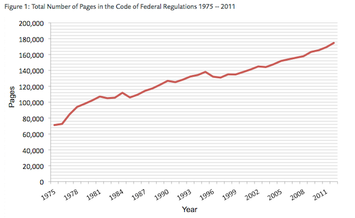
규제가 원인이라는 주장에 반대하는, 조금 더 흥미롭고(그리고 더 재미있는) 논거는 다음과 같다. 반려동물 의료 서비스는 어떠한가? 수의학적 진료는 인간의 의료 서비스보다 규제가 훨씬 덜함에도 불구하고, 그 비용은 인간 의료 시스템만큼이나 빠르게(혹은 더 빠르게) 상승하고 있다(대중 기사, 연구). 이것을 어떻게 해석해야 할지는 잘 모르겠다.
다섯째, 규제 복잡성의 증가가 문자 그대로의 규제가 아니라 소송에 대한 공포를 통해 발생하는 것은 아닐까? 즉, 기관들이 행정 절차와 비용을 추가하는 이유가 그렇게 하도록 강제되었기 때문이 아니라, 그렇게 하지 않았다가 문제가 생겼을 때 소송을 당할까 봐 두려워하기 때문은 아닐까?
나는 의료 현장에서 이런 일을 항상 목격한다. 심근경색으로 병원을 찾은 환자가 있다. 회복 기간 중, 그는 의사에게 이번 일로 정말 괴롭다고 말한다. 보통 사람이라면 "심근경색이 왔는데 당연히 괴롭겠지, 그냥 털어내세요"라고 말할 것이다. 하지만 의사가 이렇게 말했다가, 1년 뒤 환자가 다른 이유로 자살이라도 한다면, 유족들은 의사가 "경고 신호를 포착하지 못했다"며 소송을 제기해 수백만 달러를 타낼 수 있다. 그래서 이제 의사는 정신과 의사에게 자문을 구한다. 정신과 의사는 한 시간 동안 평가를 진행하고 보험사에 500달러를 청구한 뒤, 자신의 방대한 임상적 전문 지식을 동원해 다음과 같은 결론을 내린다. 환자가 괴로운 이유는 방금 심근경색을 겪었기 때문이라고.
해당 분야 외부 사람들은 의학의 얼마나 많은 부분이 이 원리에 기반해 구축되어 있는지 전혀 모른다. 흔히들 의료비 상승에 있어 소송의 중요성이 과대평가되었다고 말한다. 의료 과실 보험 비용이 그리 높지 않기 때문이라는 논리다. 하지만 위에서 언급한 상황은 결코 소송과 연관된 것처럼 보이지 않을 것이다. 관련된 모든 이들이 이를 우울증 조사를 위한 정당한 정신과 협진으로 기록하기 때문에 가능한 일이기 때문이다. 일부 연구에서는 이런 일이 일어나지 않는다고 주장하는 듯하지만, 그 연구들이 한 것이라고는 의사들을 대상으로 설문조사를 한 것뿐이다. 외람된 말씀이지만, 내가 아는 모든 의사들은 정반대의 이야기를 한다.
이는 정부 규제와는 아무런 관련이 없으나(규제가 소송을 더 쉽게 혹은 어렵게 만드는 정도를 제외하면), 비용 상승을 부추기는 확실한 요인이 될 수 있으며, 의료 분야 외의 다른 영역에도 적용될 수 있다.
여섯째, 우리의 위험 감수 수준이 변한 것은 아닐까? 즉, 주의력이 높아진 이유가 단순히 소송 공포증(lawsuitphobia) 때문이 아니라, 사람들이 실제로 보호받고 있는지에 대해 더 많이 신경 쓰게 되었기 때문일 수도 있다는 말이다. 나는 가끔 놀이터의 날카로운 모서리 위에서 아이들이 감독 없이 뛰어놀게 두려는 사람이 아무도 없어서, 놀이터가 점차 쓸모없어지고 있다는 글들을 읽곤 한다. 만약 아이 10,000명 중 1명이 놀이터에서 끔찍한 부상을 입는다고 가정해 보자. 그 수치를 100,000명 중 1명으로 줄이기 위해 놀이터 비용을 두 배로 늘리고 재미는 절반으로 줄이는 것이 과연 가치 있는 일일까? 이것은 수사적인 질문이 아니다. 나는 이 문제에 대해 사람마다 정당하게 서로 다른 의견을 가질 수 있다고 생각한다(물론 놀이터를 개선하기 위해 우리가 할 수 있는 공리주의적인 방법들이 분명히 있겠지만 말이다).
소송 문제를 다시 언급하자면, 이 현상의 일부는 개인과 기관의 위험 감수 성향 차이와 관련이 있을 것이다. 가끔 고령자가 화장실에 가려고 일어나다 넘어져 고관절이 골절되는 일이 발생한다. 이는 삶의 일부이며, 노인들은 매일 이런 위험을 안고 살아간다. 내가 아는 대부분의 노인은 침대에서 화장실까지 가는 길에 낙상 방지 시설을 설치하느라 수천 달러를 쓰거나, 넘어지지 않도록 매 순간 감시할 사람을 고용하거나, 화장실 관련 낙상을 원천 차단하기 위해 침대 옆 간이 변기를 구매하지 않는다. 이는 노인들이 비용과 편의를 위해 어느 정도의 낙상 확률은 기꺼이 감수한다는 '현시 선호(revealed preference)'를 보여준다. 반면, 구내에서 노인이 한 명이라도 넘어지면 막대한 소송에 휘말리게 되는 병원은 그러한 확률을 감수할 의사가 없다. 병원은 노인들의 침대에 난간을 설치하고, 허락 없이 침대를 벗어나려 하면 울리는 알람을 달며, 환자 케어 보조원을 고용해 노인들이 화장실로 걸어갈 때 옆에서 조심스럽게 부축하게 한다 (제 생각에57 이 직업은 곧 최소 석사 학위를 요구하게 될 것 같다). 더 많은 영역이 제도화되고 기관이 수용 가능한 위험 감수 수준이 낮아질수록, 인구 전체적으로 위험 회피 경향이 강해지는 추세가 아니더라도 비용과 위험 사이의 절충점은 이동할 수 있다.
일곱째, 비용을 지불하지 않는 사람이 너무 많기 때문에, 정작 비용을 지불하는 사람들의 부담이 더 커지는 것일까? 대학의 경우 어느 정도 그렇다고 볼 수 있는데, 장학금을 받지 않는 학생들의 등록금으로 충당되는 장학금 혜택을 받는 이들이 점점 늘어나고 있기 때문이다. 이에 관한 확실한 통계 자료를 찾지는 못했지만, 반론 하나를 제기해 보자면 이렇다. 대학이 그냥 장학금 지원을 하지 않고, 비용을 지불하는 학생들에게 훨씬 낮은 가격을 제시하면 되지 않을까? 장학금이 좋고 이타적인 제도라는 점은 이해하지만, 모든 대학이 스스로를 이타적 기관으로 정의하며, 더 나은 가격에 동일한 서비스를 제공하는 것보다 그 역할을 더 중요하게 여긴다고 생각한다면 그것이야말로 놀라운 일일 것이다. 아마도 이는 왜 더 많은 사람이 대학을 설립하지 않는지에 대한 나의 의문과 관련이 있을 것이다. 어쩌면 이것 역시 "똑똑한 사람들은 영리 대학에 가기를 당연히 두려워하고 혼란스러워하며, 좋은 대학과 나쁜 대학을 구별할 능력이 부족하기 때문에 굳이 좋은 대학을 설립할 가치를 느끼지 못한다"는 논리가 다시 적용되는 지점일지도 모르겠다.
이는 의료 서비스 분야에서도 마찬가지다. 우리 병원(그리고 이 나라의 모든 병원)에는 적어도 일주일에 한 번은 메스암페타민(meth)을 과다 복용하는 이른바 '단골' 환자들이 있다. 이들은 병원에 들어와 메스암페타민 과다 복용 치료를 받고(응급 환자를 법적으로 거부할 수는 없다), 약물 중독 치료를 받으라는 권고를 듣지만(그들이 이 권고를 따를 것이라는 기대는 조금도 없다), 그러고는 퇴원한다. 이들 대부분은 가난하고 보험조차 없지만, 입원할 때마다 수천 달러의 비용이 발생한다. 이 비용은 납세자들과, 자신의 진료비 청구서에 높은 마진이 붙은 좋은 보험을 가진 다른 병원 환자들이 나누어 부담하게 된다.
여덟째, 임금은 오르지 않는데 총 보상액만 증가하고 있는 것은 아닐까? 특히 많은 공공 부문 업무에서 연금 위기가 분명히 존재하는 것으로 보이며, 이 비용의 일부가 교사 등의 연금을 지급하는 데 쓰이고 있을 가능성이 있다. 내가 알기로는 일반적으로 연금이 임금보다 훨씬 빠르게 증가하고 있지는 않지만, 특정 산업에서는 그렇지 않을 수도 있다. 또한, 이는 왜 과거보다 현재 연금에 더 많은 비용을 지출해야 하는가라는 질문으로 책임을 전가하는 꼴이 될 수도 있다. 기대 수명의 증가가 이 모든 것을 설명한다고 생각하지는 않지만, 내 생각이 틀렸을 수도 있다.
앞서 정치 이야기를 짧게 언급했지만, 여기서는 좀 더 비중 있게 다룰 가치가 있을 것이다. 자유지상주의(Libertarian) 성향의 사람들은 관료주의적 형식주의(red tape)가 너무 심해 경제가 숨 막혀 하고 있다고 계속해서 주장한다. 반면 그런 성향이 덜한 사람들은 이를 가난한 이들에 대한 무관심이나, 문명 사회에서 정부가 수행하는 중요한 역할을 이해하지 못하는 태도, 혹은 인종차별을 암시하는 '개호루라기(dog whistle, 특정 집단만 알아듣게 보내는 은밀한 신호)' 같은 것으로 해석하곤 한다. 왜 더 많은 사람이 그냥 솔직하게 이렇게 말하지 않는지 모르겠다. "보세요, 진짜 우리의 주된 문제는 가장 중요한 모든 것들의 비용이 아무런 이유 없이 예전보다 10배는 더 든다는 겁니다. 게다가 품질은 오히려 떨어지는 것 같은데, 왜 그런지는 아무도 모르고, 우리는 그저 해결책을 찾으려 필사적으로 허우적거리고 있을 뿐이라고요." 이 점을 명확히 밝히고 나면, 수많은 정치적 논쟁은 전혀 다른 관점에서 보이게 된다.
예를 들어, 중산층이라면 누구나 원할 때 대학 교육비를 감당할 수 있었던 시절을 기억하며 무상 보편적 대학 교육을 주장하는 사람들이 있다. 반면, 사람들이 정부의 보조금에 의존하지 않았던 시절을 기억하며 이러한 정책에 반대하는 사람들도 있다. 둘 다 맞는 말이다! 나의 삼촌은 꽤나 수월한 여름 아르바이트만으로 정말 좋은 대학의 등록금을 냈는데, 당시 대학 등록금이 지금의 10분의 1 수준이었으니 그리 어려운 일은 아니었다. 무상 대학 교육을 찬성하는 이들과 반대하는 이들 사이의 현대적 갈등은 결국 우리의 손실을 어떻게 분배할 것인가에 관한 문제다. 과거에는 낮은 세율과 보편적인 교육 기회를 동시에 누릴 수 있었다. 하지만 이제는 그것이 불가능해졌고, 우리는 어떤 가치를 희생할 것인지를 두고 논쟁해야만 한다.
또는 이런 경우도 있다. 어떤 이들은 교사 노조가 비용 상승을 초래해 교육의 '역동성'을 갉아먹고 있다고 화를 낸다. 반면 다른 이들은 교사들이 저임금과 과로에 시달리고 있다며 노조를 격렬히 옹호한다. 비용 질병(cost disease)의 관점에서 보면, 이번에도 두 주장 모두 명백히 사실이다. 납세자들은 예전만큼 저렴하게 교육을 받을 권리를 지키려는 것이고, 교사들은 예전만큼 돈을 벌 권리를 지키려는 것이다. 납세자와 교사 노조 사이의 갈등은 결국 손실을 어떻게 분배하느냐의 문제다. 누군가는 한 세대 전보다 상황이 나빠질 수밖에 없는데, 그게 과연 누구여야 하는가?
그리고 의료 서비스, 공공 주택 등에 관한 다양한 논쟁에서도 정도의 차이는 있겠으나 마찬가지다.
내일부터 물값이 10배로 뛴다고 상상해 보자. 갑자기 사람들은 물을 마실 것인지, 아니면 설거지를 할 것인지 선택해야 하는 상황에 놓인다. 활동가들은 샤워를 하는 것이 기본적인 인권이라고 주장하고, 심술궂은 토크쇼 진행자들은 본인들이 살던 시대에는 부모가 자녀에게 물을 낭비하지 말라고 가르쳤다며 혀를 찬다. 한 연합체는 저소득층 가구에 정부 보조금을 통한 무상 급수를 보장하는 법안을 추진하고, 폭스 뉴스(Fox News)의 탐사 보도는 정부 돈으로 물을 공급받는 일부 사람들이 호화롭게 장시간 샤워를 즐기고 있다는 사실을 폭로한다. 모두가 격분하고, 기본적인 자비심이니 개인의 책임이니 하는 온갖 이야기들이 쏟아져 나오겠지만, 이 모든 것은 왜 물값이 예전보다 10배나 올랐는가?라는 질문보다 부차적인 문제다. 나는 이것이 가난한 이들을 진심으로 돕고 싶어 하는 사람들조차 왜 그토록 '세금 징수 및 지출(tax and spend)' 정책을 두려워하는지에 대한 핵심적인 직관이라고 생각한다. 비용 질병(cost disease)의 맥락에서 보면, 이는 특정 산업들이 끊임없이 가격을 두 배, 세 배, 혹은 열 배로 올리고, 정부는 "그래, 알았다"라며 그들이 현재 요구하는 비용을 충당하기 위해 세금을 얼마든지 올리는 모습과 같기 때문이다.
모든 이에게 대학 교육을 무상으로 제공한다면, 이는 커다란 사회적 문제를 해결하는 일이 된다. 하지만 동시에 아무런 이유 없이 10배나 비싸진 가격을 그대로 고착시키는 일이기도 하다. 이는 마땅히 지불해야 할 금액보다 10배나 더 많은 비용을 감당해야 하는 정부에게 불공평한 일이다. 또한, 적정 가격이었다면 충분히 스스로 감당할 수 있었을 서비스에 대해 정부 보조금을 받는다는 낙인을 견뎌야 하는 가난한 이들에게도 불공평하다. 그리고 만약 대학들이 이 기회를 틈타 비용을 20배로 올리고 우리 아이들이 그 비용을 보조해야 한다면, 이는 미래 세대에게도 불공평한 일이 될 것이다.
무상 의료나 무상 대학 교육, 혹은 그 무엇이든 현재 그 비용을 지불하는 것에 반대하는 사람들 중, 비용이 더 적게 들고 낭비가 적으며 효율적이고, 시간이 흐를수록 가격이 오르는 것이 아니라 내려갈 것으로 기대되는 의료 서비스라면 기꺼이 비용을 지불할 사람이 얼마나 될지 모르겠다. 내 생각에 그 수는 꽤 많을 것이다.
설령 그렇지 않다 하더라도, 그게 무슨 상관인가? 가난한 이들을 돕고자 하는 사람들은 메디케이드(Medicaid)에 5,000억 달러를 쏟아부을 만큼의 정치적 자본을 충분히 가지고 있다. 만약 그 비용의 효율이 10배만 더 높아진다면, 추가적인 정치적 조치 없이도 모든 이가 필요한 의료 서비스를 받을 수 있을 것이다. 만약 어떤 정부 프로그램이 가난한 이들에게 연간 수백 달러의 비용으로 훌륭한 건강보험을, 약 천 달러의 비용으로 대학 등록금을, 그리고 현재 비용의 3분의 2 수준으로 주거지를 제공할 방법을 찾아낸다면, 그것은 역사상 가장 위대한 빈곤 퇴치 성과가 될 것이다. 그 프로그램의 이름은 바로 "수십 년 전만큼의 효율성을 되찾는 것"이다.
1930년, 경제학자 존 메이너드 케인스(John Maynard Keynes)는 자신의 손주 세대가 되면 주당 노동 시간이 15시간이 될 것이라고 예측했다. 당시에는 그것이 합리적으로 보였다. GDP가 워낙 빠르게 상승하고 있었기에, 그래프에 선 하나만 그을 줄 아는 사람이라면 누구라도 우리 세대가 그의 세대보다 4~5배는 더 부유해질 것임을 알 수 있었다. 게다가 당시 중산층의 평균적인 삶은 꽤 괜찮은 편이었고, 필요한 대부분의 것들을 갖추고 있다고 느꼈다. 그렇다면 굳이 왜 시간을 더 내어 쉬지 않고, 케인스 본인의 삶보다 겨우 두 배 정도만 더 호화로운 생활 수준에 안주하지 않겠는가?
케인스(Keynes)의 말이 어느 정도 맞았다. 오늘날 1인당 GDP는 그의 시대보다 실제로 4~5배 더 높다. 하지만 우리는 여전히 주 40시간을 일하며, 통계마다 차이는 있지만 상당수( 76 ? 55? 47?)의 미국인들은 여전히 하루 벌어 하루 먹고사는 삶을 살고 있다.
물론, 이러한 현상의 일부는 불평등이 심화되고 이득의 대부분이 부유층에게 돌아가고 있기 때문이다. 하지만 이것만으로는 재앙이라 할 수 없다. 케인스(Keynes)가 꿈꾼 유토피아에 도달하는 속도가 예상보다 조금 느려질 뿐, 결국에는 도달하게 될 것이기 때문이다. 이득의 대부분이 부유층에게 간다는 것은, 적어도 일부의 이득은 빈곤층에게도 돌아가고 있다는 뜻이다. 게다가 적어도 이 문제에 대해 주류 사회의 인식은 충분히 높다.
내가 더 걱정하는 부분은 기본적인 인간적 필요에 드는 비용이 임금 상승 속도보다 더 빠르게 치솟는다는 점이다. 설령 수입이 두 배로 늘어난다 해도, 의료비나 교육비 등이 열 배로 뛴다면 결국 뒤처질 수밖에 없다. 현재 생활 수준은 단순히 정체된 것이 아니라 하락할 위험에 처해 있으며, 그 상당 부분은 학자금 대출과 건강보험 비용 등이 차지하고 있다.
무슨 일이 벌어지고 있는 걸까? 나도 모르겠다. 그리고 이 상황이 정말 무섭게 느껴진다.
Please provide the text you would like me to translate. You have provided the header and a placeholder, but the actual paragraph from "Considerations On Cost Disease" is missing. Once you provide the text, I will translate it according to your guidelines.
7106 단어
{kind=link}